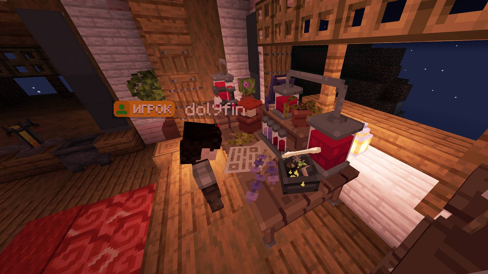

Гайды / Выживание
Болезни и медицина
Десять болезней с тремя стадиями, радиация и лекарства, которые варят в три этапа на станциях алхимика.

Как устроены болезни
Заразиться можно от еды, монстров, игроков и мест. Каждая болезнь развивается стадиями: со временем, пока ты в игре, симптомы становятся тяжелее. Повторное заражение той же болезнью ускоряет её развитие.
- Свои болезни смотри командой
/med— она показывает состояние здоровья. - Справочник всех болезней —
/med болезни. - Книга алхимика с рецептами —
/med книга. - После лечения появляется иммунитет к этой болезни — от 10 до 60 минут.
- Некоторые болезни заразны: больной рядом может передать их тебе.
Список болезней
| Болезнь | Откуда берётся | Лекарство |
|---|---|---|
| Пищевое отравление | Сырая курица и рыба, паучий глаз, ядовитый картофель, иглобрюх, гнилая плоть | Угольная настойка; лёгкое проходит само за ~8 минут |
| Столбняк | Удары железных големов, упавшие блоки, кактусы и ягоды, ржавые стрелы | Сыворотка от столбняка |
| Болотная лихорадка | Ночью на болотах — укусы гнуса. Шлем снижает шанс | Жаропонижающий настой |
| Пепельная чахотка | Долгая добыча камня и руды глубоко под землёй, ниже Y 0 | Дыхание ветров |
| Споровая лихорадка | Цветущие спорницы, пышные пещеры, грибные острова, чихающие больные — заразна | Монастырский сбор |
| Трупный яд | Гнилая плоть, укусы зомби, утопленников и кадавров | Толчёный безоар |
| Проклятый порез | Сильные удары визер-скелетов и поборников | Набор для прижигания |
| Ликантропия | Укусы волков и белых медведей ночью, укус игрока-оборотня — заразна | Отвар аконита |
| Вампиризм | Фантом, вцепившийся в сырое мясо в руках; укус зомби во тьме при низком здоровье; укус игрока-вампира — заразна | Святая вода |
| Варп-скверна | Удары эндерменов, шалкеров, эндермитов и дракона, хорус, эндер-жемчуг | Стабилизатор Яви |
Симптомы по стадиям
Пепельная чахотка
- Кашель, максимум здоровья −2 сердца.
- Одышка при беге, −4 сердца.
- Удушье, −6 сердец.
Столбняк
- Судороги: ноги сводит, прыгать нельзя.
- Челюсть сводит — иногда не получается поесть.
- Мучительные спазмы наносят урон.
Вампиризм
- Ночное зрение. Обычная еда — как пепел, а сырое мясо лечит.
- Солнце обжигает кожу, ночные удары пьют кровь.
- Чеснок становится ядом, солнце испепеляет.
Ликантропия
- Ночью — сила и скорость, днём — слабость.
- Звериный голод и тяга к сырому мясу.
- В полнолуние — полное обращение в зверя.
Варп-скверна
- Шёпот Бездны, тошнота и слепота.
- Внезапные смещения в пространстве.
- Тебя бросает на десятки блоков, Бездна тянет силы.
Остальные
- Споровая лихорадка: чихание и слепота → кашель и одышка → яд и тошнота.
- Трупный яд: голод → еда насыщает вдвое хуже → нежить принимает тебя за своего, но плоть гниёт.
- Проклятый порез: кровотечение и слабое лечение → лечение причиняет боль → кровь льётся сильнее.
- Болотная лихорадка: озноб и жар → приступы сильнее → изнуряющая лихорадка ранит.
- Пищевое отравление: тошнота и голод → рвота, сытость пропадает → сильное отравление.
Радиация
Радиация — не обычная болезнь: она копится как доза от излучения рядом с тобой.
- Излучают радий-226, торий и нептуний — руды, слитки, блоки и пыль, а также редстоун.
- Чем ближе источник и чем дольше рядом — тем быстрее растёт доза. Добыча радиоактивной руды облучает в 6 раз сильнее.
- Доза медленно спадает сама, но очень медленно.
| Доза | Что происходит |
|---|---|
| 100+ | Тошнота и треск дозиметра в ушах |
| 300+ | Слабость, голод, свечение |
| 600+ | Здоровье тает, раны не заживают |
| 900+ | Смертельное облучение |
| 1300+ | Постоянный урон |
Защита
- Свинцовая броня: каждая часть снижает облучение.
- Антирадин выводит из 220 до 700 единиц дозы.
- Не носи радиоактивные слитки в инвентаре без нужды — они облучают и тебя.
Станции алхимика
Лекарства варят на пяти станциях — их ставят как мебель.
| Станция | Для чего |
|---|---|
| Алхимическая станция | Главная: выбор рецепта и растирание в ступке |
| Стол с перегонным кубом | Перегонка смеси в экстракт |
| Варочная стойка | Синтез — финальная реакция и розлив |
| Аптечная полка | Хранение; лекарства на ней настаиваются и становятся лучше |
| Полка трав | Справочник по ингредиентам |
Как сварить лекарство
Каждое лекарство проходит три этапа-мини-игры. От точности на каждом этапе зависит качество — чем оно выше, тем сильнее лечение.
Этап 1. Ступка
- Подойди к алхимической станции и выбери рецепт.
- Положи ингредиенты — они закружатся в ступке.
- Пестик качается маятником. Бей ЛКМ, когда он у левого края, и ПКМ — у правого.
- Чем ближе к краю удар — тем лучше. Получишь смесь.
Этап 2. Перегонка
- Подойди со смесью к столу с перегонным кубом.
- Температура куба гуляет сама, а рабочий диапазон медленно смещается.
- ПКМ — раздуть огонь, ЛКМ или Shift — остудить.
- Держи температуру в диапазоне: тогда капают капли экстракта.
- Перегрел — экстракт выкипает. Получишь экстракт.
Этап 3. Синтез
- С экстрактом иди к варочной стойке.
- Реакция требует действий по очереди: ПКМ, ЛКМ, Shift или F.
- Шкала наполняется — жми нужное действие, когда она в зелёной зоне.
- Ошибки и опоздания расшатывают реакцию. Стабильность упала до нуля — взрыв, экстракт потерян.
Настаивание
Положи готовое лекарство на аптечную полку: каждые 10 минут его качество немного растёт, до +10%.
Артефакты-лекари
Редкие артефакты в слоте аксессуаров защищают от болезней. Например, Сфера-панацея защищает от всех, Угольное яблоко — от отравлений, споров и радиации, Клык вендиго — от ликантропии, Красная кость — от вампиризма. Подробнее об аксессуарах — в гайде «Классы, сеты и умения».
Команды
/med | состояние здоровья |
/med болезни | справочник болезней |
/med книга | книга алхимика с рецептами |